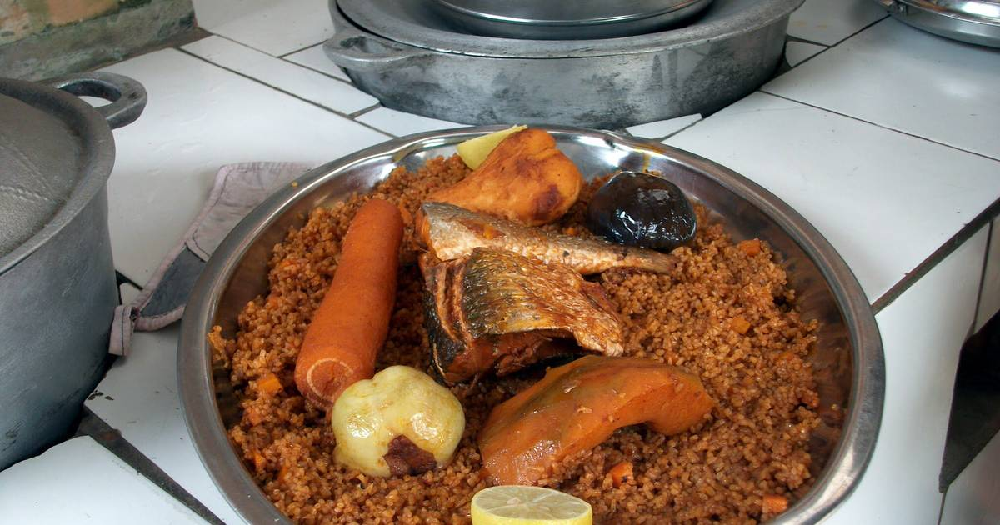

When visiting The Gambia, you'll find a huge choice of restaurants to suit every palate including Italian, Indian, Chinese and Lebanese, as well as international restaurants selling everything from a full English breakfast to fillet steak with peppercorn sauce. I’m a firm believer, however, in getting to know a country through its food and I’d recommend everyone visiting The Gambia for the first time, at the very least, to try one or two traditional dishes. You’ll often see them featured on menus plus there are a few restaurants that specialise in local cuisine.
Benechin literaly means ’one pot’ and can be cooked with chicken or other meat but fish is probably the most common variation. I’ve made this with Ida Cham who runs cooking classes. Before the class we headed to the beach not for a swim but for the fish market. Ida selected a John Dory fish and a Red Snapper. She also used a small amount of dried salted fish for extra flavour. While the fish sellers scaled and gutted the fish, we bought other ingredients including tomatoes, carrots, spring onions, sweet potatoes, onions, aubergine, cassava, bitter tomatoes and butternut squash. Chilli is also an important ingredient. This dish is also referred to as Jollof rice. Visit our excursions page on our website to find out more about Gambian Home Cooking with Ida.
Afra is a very popular late night snack. Typically you’ll select your choice of meat which will be chopped up in front of you, seasoned and grilled then served with mustard or a spicy sauce, however, in my experience at least, the quality can vary greatly.
This peanut-based dish is probably the most cooked dish in The Gambia and comes served with white rice. Domoda is made from peanuts with tomato paste, mustard, black pepper and onions.
This is another common dish that you’ll often find on restaurant menus, usually in the form of Chicken Yassa. The chicken is cooked with chillies, lime, onions and mustard and a stock cube of Maggi cubes, a popular ingredient in the Gambia. Variations that you’ll sometimes find include beef, fish, prawn or vegetable.

Ebbeh is a traditional African soup originating from The Gambia. This chunky soup is made with vegetables (usually cassava, but sometimes also sweet potatoes and coco yam), palm oil, chili peppers, lime juice, stock cubes, water, tamarind, and seafood such as bonga fish, catfish, prawns, and crabs.